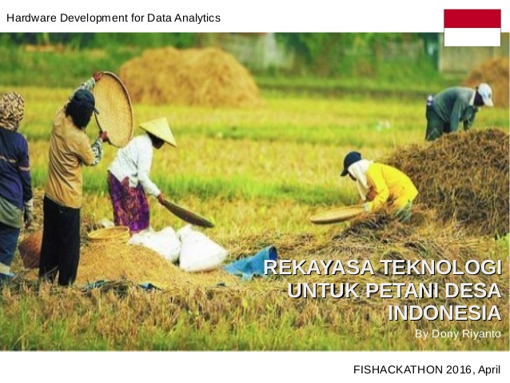
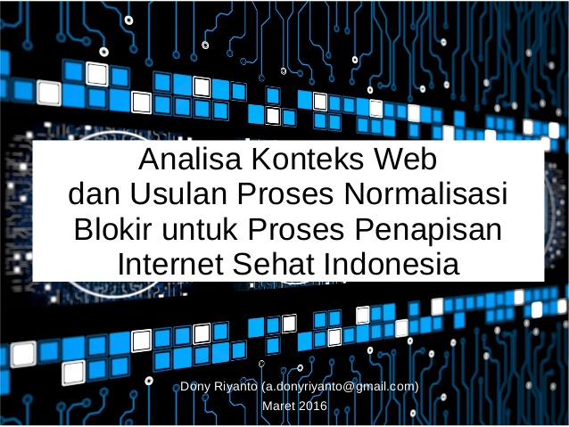

A professional and experienced in the field of IT both software and hardware. I have a huge passion in information and communication technologies. Start from hobby since I was junior high school, then got higher education in Gadjah Mada University majoring in Software and Computer Sciences, I start to learn many aspect of computing deeper. I keep encouraging myself to get involved in more and more ICT projects, businesses and peoples in it. Build software, hardware, computer networking, designing and tailoring enterprise telecommunication solution, managing team work, understanding problems both technical and non-technical, understanding business processes and rules, involved in some IT communities, maintaining relationship both internal and external, start my own SOHO, doing sales and consultancies, exploit computer security leaks and weaknesses, exploring new technology, learn new wave media, teaching in some colleges, getting updated to the latest technology, do mentoring/training, etc.
Drone Flying
Smartcity Mobile Apps
Social Media Learning
Teknologi Untuk Petani
Analisa Konten Web
KFC Self Service Design
IoT: A mini world
Things Security